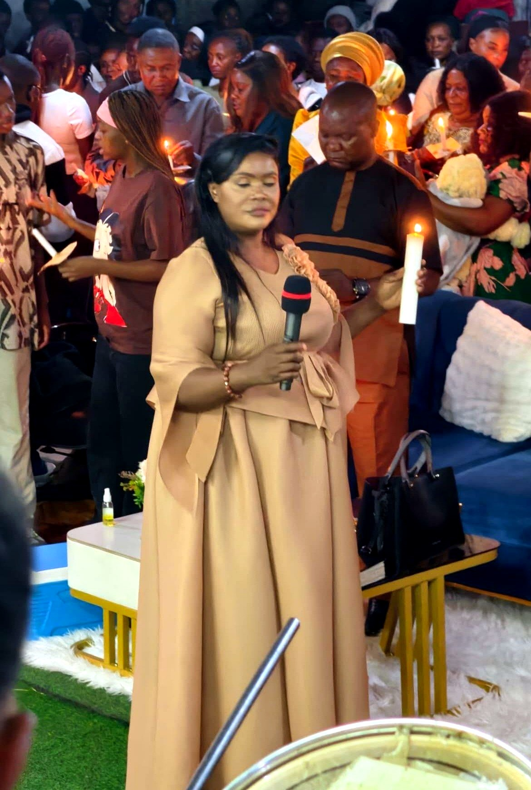
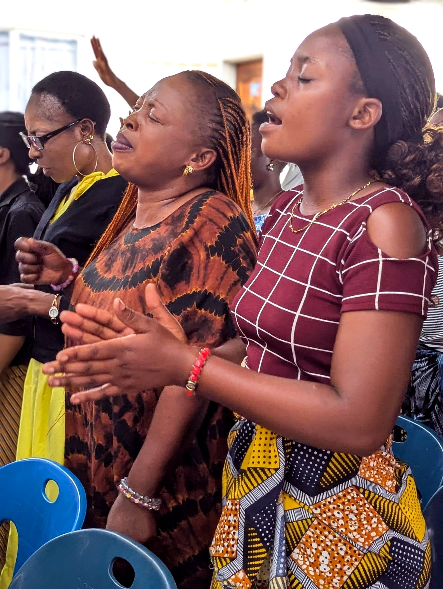
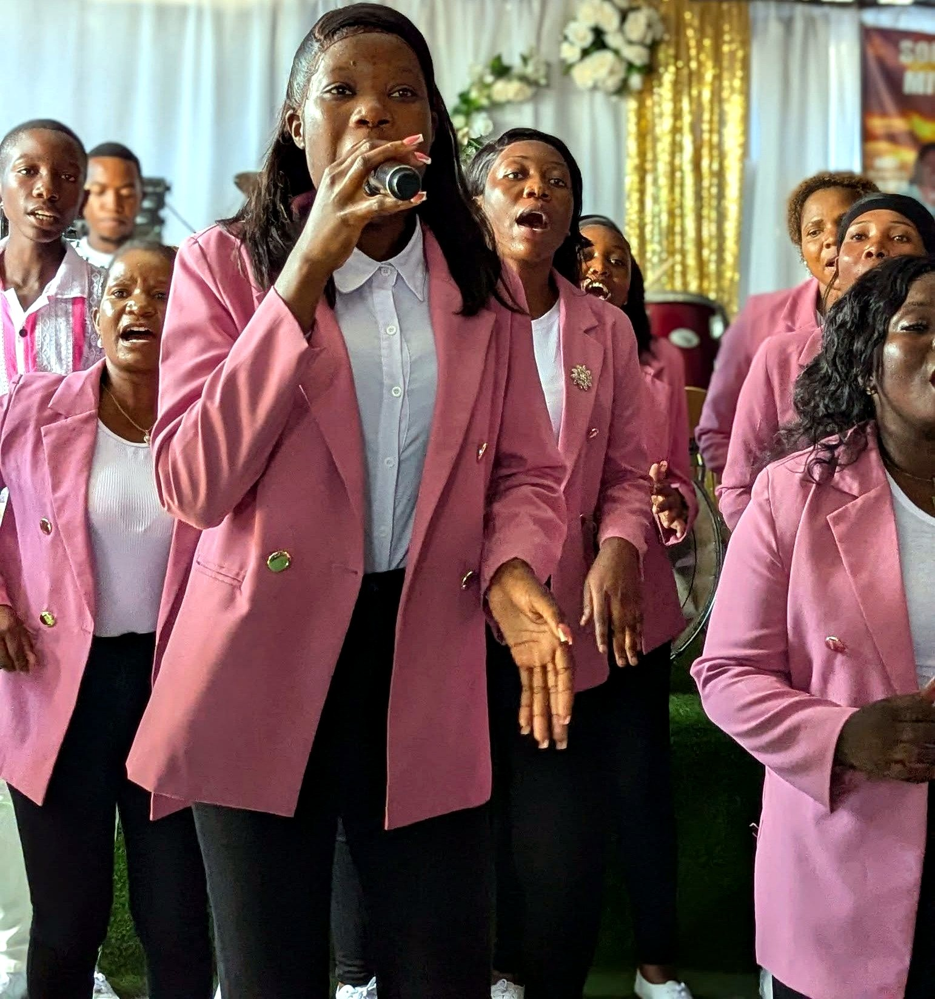
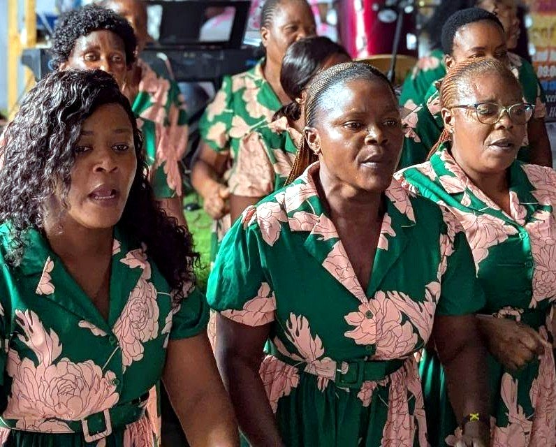
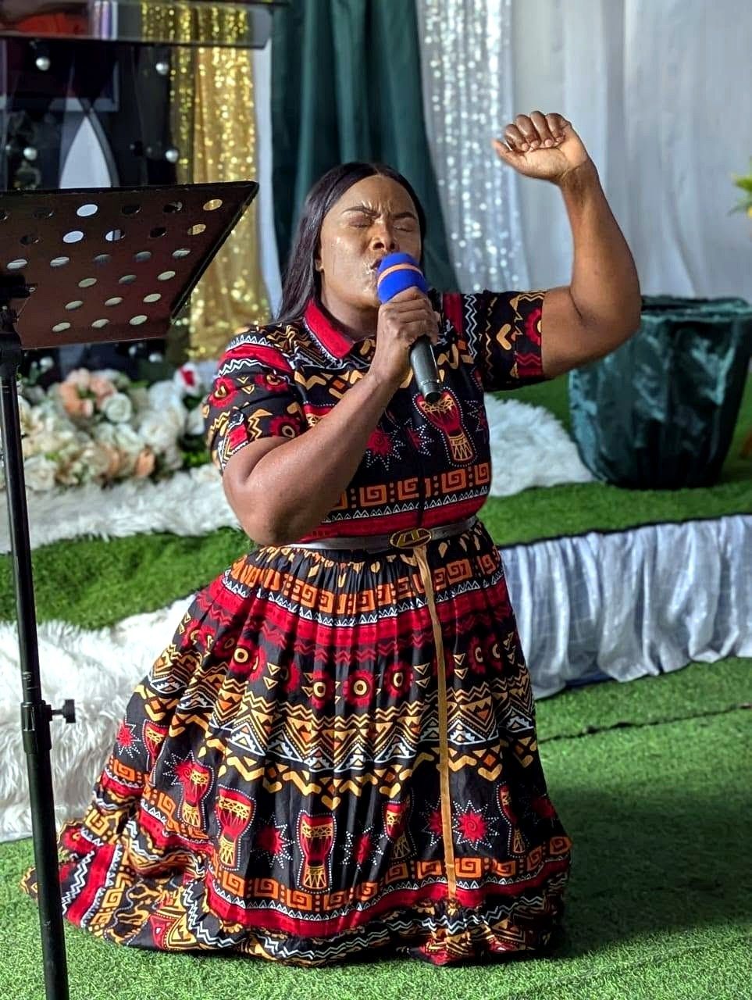

The Word
We build our lives on Scripture. The Bible is our foundation for faith, conduct, and every decision.
Welcome to Souls for Christ Ministries Zambia — a Spirit-filled family where the Word of God, prophetic ministry, and the love of Jesus meet real lives.
Come as you are. Leave encouraged, strengthened, and ready to follow Christ.

Join us in Lusaka, Zambia or live on Facebook.

Souls for Christ Ministries Zambia is a Spirit-filled church family in Lusaka, Zambia. We gather to worship God, grow in His Word, pray with faith, and reach our community with the love of Jesus Christ.
Our heart is simple: to win souls for Christ and help every believer grow into the fullness of what God has called them to be. Whether you are new to faith or returning after a season away, there is a place for you here.
We honour the spiritual family and leaders God has placed around this house. Their prayers, counsel, and fellowship are part of our story, and we are grateful.
What began as a small gathering of praying hearts has grown into a church family with a clear mission: to win souls for Christ and to make room for every person to encounter the living God.
Today, Souls for Christ Ministries Zambia gathers in Lusaka for Sunday celebration, Tuesday service, prayer and intercession, and worship led by our choirs and praise team. The ministry also has a branch being planted in Chongwe.
We are grateful for the spiritual covering and fellowship that have shaped this house, and we remain committed to the simple things that matter: the Word, prayer, worship, and people.
Read our full storyEverything we do flows from a living relationship with Jesus Christ, a love for the Word of God, and dependence on the Holy Spirit.
We build our lives on Scripture. The Bible is our foundation for faith, conduct, and every decision.
Prayer is not a last resort. It is our first response and the atmosphere of this house.
We believe the Holy Spirit still speaks, encourages, strengthens, and directs His people today.
Every believer is called to share the love of Jesus and help someone find their way home.
Grow in the Word, stay in prayer, and keep the message with you wherever you go.
A short word of Scripture and encouragement for each day.
Read todayTake the Sunday and Tuesday messages home with you.
Read the notesSend your request and let the church stand with you in prayer.
Send a requestPartner with the work of the Gospel and the care of our community.
Ways to giveGod has given every member a gift. Our ministries work together to serve the church, reach the community, and make room for every person to grow.
Our Main Choir, Revelation Choir, and Praise Team lead the church into the presence of God through song.
Explore worshipTaking the love of Christ beyond the church walls into Lusaka and surrounding communities.
Explore outreachStanding in the gap for the church, families, and those in need, and supporting one another with practical love.
Explore careThe church family does not only gather for worship; it shows up for one another. Through the Church Committee, Friends’ Committee, and Mothers’ Committee, members have rallied around weddings, funerals, and families in need.
This is the Gospel with hands and feet: practical love, generous giving, and a church family that carries one another’s burdens.
Support the workPlanning, administration, and practical support for the life of the church.
Friendship, care, and support for members and families in need.
Encouraging mothers and supporting weddings, funerals, and family needs.
Take the message home with you. These short notes gather the themes God has been speaking through our Sunday and Tuesday services.
What you are facing is real, but it is not greater than the God who holds your tomorrow.
Read the outlineEvery believer is called to share the love of Jesus and help someone find their way home.
Read the notesKeep praying. God hears, God remembers, and He is working on your behalf.
Read the notesHealing, fruitfulness, restored marriages, provision, and salvation — these are the stories of God’s faithfulness in our church family.
“What God has done for me is beyond what I can explain. I came with a heavy heart, and I left with peace, direction, and a new song.”
A testimony of God’s faithfulness“The prayers of this house stood with my family. God answered in a way we could never have planned or imagined.”
A testimony of answered prayer“I found a family that prayed with me, encouraged me, and helped me grow in faith. There is hope here.”
A testimony of grace and communityFrom Sunday praise to moments of prayer and fellowship, these are some of the faces and moments that make up our church family.



We gather in Lusaka, Zambia. Please call or WhatsApp for directions and transport help. A branch is also being planted in Chongwe.
Plan your visitFind us in Lusaka, Zambia. Open in Google Maps
Get service reminders, prayer updates, and church news directly on WhatsApp, or follow us on Facebook.
We gather every Sunday in Lusaka and stream our services on Facebook. If you cannot be with us in person, join us online and be part of what God is doing.
Watch on Facebook